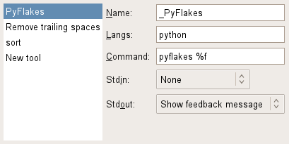

Plugins¶
Complete words¶
Similar to Eclipse behavior: cycles through possible word completions from opened documents.
Default key: <alt>slash
Edit and Select¶
Provides features for easy text editing.
- <ctrl>d deletes the line under the cursor, copying it into the clipboard.
- <ctrl><alt>o shows cursor offset and cursor column position. Huh? I simply need some offsets (column and line) when I’m writing tests (text parsing, code analyzing, etc.).
- <alt>w smart select. Selects semantic blocks. Just try it. I’m sure you regularly want to select a whole function definition or a quoted string or function parameters or function call with parameters or any statement block? There is only one function for such tasks in Snaked. In conjunction with stock gtksourceview2 selection moving (<alt>Up, <alt>Down) you will quickly forget about copy-and-paste.
- <shift><alt>w shrinks smart selection back.
- <alt>f reformats selection to current right margin width.
That’s all for now. Planed feature functionality:
- Smart string literals edit.
- Automatic brackets and quotes pairing.
- Automatic text wrap.
- Maybe vertical selection.
- Vim-like numbers incrementing/decrementing (<ctrl>a, <ctrl>x).
- Vim-like above line symbols copying (<ctrl>y).
- Vim-like... Over 9000 other features. In order of first need. Maybe implement vim mode? Damn.
Goto Dir¶
Default shortcut <crtl><alt>l opens the folder containing the current document in your file manager.
Goto Line¶
<ctrl>l popups a dialog allowing you to jump to the specified line number.
Hash Comment¶
Toggle hash # commenting. Only useful for languages allowing that kind of comments Default key <ctrl>slash.
Python Flakes¶
Background python code linter. Highlights problems like unused or undefined imports or variables. Also gives some feedback about syntax errors. This is a time saver plugin.
Save positions¶
Remembers latest position in file for the next time.
Search¶
Simple search (and replace), like other editors do.

When Regex is on, replace entry supports back references:
- \1 for the first group
\g<name> for name group
Shortcuts¶
- <ctrl>f shows dialog.
- Escape hides it.
- Enter in search or replace text entry will initiate the search.
- <ctrl>j, <ctrl>k jumps to next/previous match.
- <ctrl>h highlights selection occurrences.
To control ignore case, regex checkboxes and activate Replace/Replace all buttons you can use the following mnemonics: <alt>c, <alt>x, <alt>p and <alt>a.
External tools¶
Plugin allowing to run commands, optionally piping selection or whole buffer’s content. stdout processing is also supported (for instance, you can get the external program output back into your buffer).
Name: tool’s name. You can use underscore (“_”) to define mnemonic key and pango markup too.
Langs: comma separated list of languages compatibles with this tool. Leave the field empty if the tool should be available on all editors.
Command: Shell command to execute. Following variables are supported:
- %f — current filename
- %d — current filename’s directory
- %p — current project directory
Note
You don’t have to quote it!
Stdin and Stdout should be self-explanatory.
The default key to activate the “run” menu is <alt>x. Then, the specific tool can be selected by pressing it’s mnemonic key or by moving into the list and pressing Enter.
Snippets¶
It is similar to vim’s SnipMate plugin which is a clone of TextMate’s snippets, you may refer to these projects for syntax documentation.
User snippet files are read from ~/.config/snaked/snippets. You can configure it via preferences (<ctrl>p) item Snippets.
There is ability to attach several snippet sets to one editor via multiple contexts (preferences File types item).
Missing features:
- Variable/python commands/shell commands expansion via backticks.
Spell check¶
Attaches spell checker to current editor. You need pygtkspell installed (look at gnome-python-extras package for your distro).
Spell check is activated/deactivated by pressing F7 key.